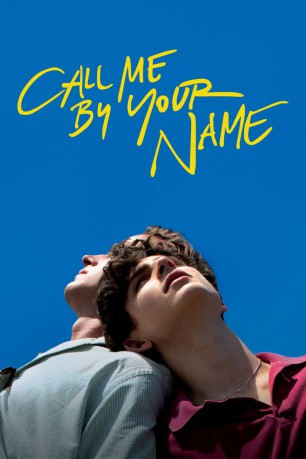

#9027 Call Me by Your Name
Auszeichnungen: 1 Oscars gewonnen für 3 Oscars nominiert 1 BAFTA-Awards gewonnen
 
 IMDB-Wertung: 8.0 / 10
IMDB-Wertung: 8.0 / 10  Metascore: 93
Metascore: 93 
Norditalien, 1983: Familie Perlman verbringt den Sommer in einer mondänen Villa. Während der 17 Jahre alte Sohn Elio Bücher liest, klassische Musik hört und keinen Flirt mit seiner Bekannten Marzia auslässt, beschäftigt sich sein Vater, ein emeritierter Professor, mit antiken Statuen. Außerdem hat sich der auf griechische und römische Kulturgeschichte spezialisierte Archäologe mit Oliver einen Gast ins Haus geholt, der ihm bei seiner Arbeit zur Seite stehen soll. Der selbstbewusste und attraktive Besucher wirbelt die Gefühle des pubertierenden Elio ganz schön durcheinander. Während sich langsam eine Beziehung zwischen den beiden anbahnt, merkt Elio, dass er trotz seiner Intelligenz und der Bildung, die er dank seinem Vater und seiner Mutter Annella genossen hat, noch einiges über das Leben und die Liebe lernen muss...
Jahr: 2017
Dauer: 132 Minuten
FSK: 12
Land: Italien Studio: Sony Pictures ReleasingTonspuren: DTS - ,
Untertitel: Deutsch, Englisch,
Auflösung: 1080p (1920x1040) Größe: 10752 MB
Genre: Drama, Liebe
Regisseur: Luca Guadagnino
Drehbuch: James Ivory
Soundtrack:
Darsteller:
 Armie Hammer als Oliver
Armie Hammer als Oliver Timothée Chalamet als Elio
Timothée Chalamet als Elio Michael Stuhlbarg als Mr. Perlman
Michael Stuhlbarg als Mr. Perlman Amira Casar als Annella Perlman
Amira Casar als Annella Perlman- Esther Garrel als Marzia
- Peter Spears als Isaac
- Victoire Du Bois als Chiara
- Vanda Capriolo als Mafalda
- Antonio Rimoldi als Anchise
- Elena Bucci als Bambi - Art Historian
- Marco Sgrosso als Nico - Art Historian
- André Aciman als Mounir
Datei: X:\2017(A-F)\Call Me by Your Name (2017, FSK12, 1920x1040).mkv seit 08.06.2018
Festplatte: HD 2017(A-Z)-2018(A-F)
 Es gibt insgesamt 152 Filme in der Gruppe '2017(A-F)'
Es gibt insgesamt 152 Filme in der Gruppe '2017(A-F)'